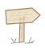
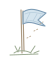
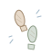

我想把常见的前端动效名词整理成一页：查到名字时，就能顺手看一遍效果。有些动作看起来相近，放在一起比较，才更容易说清楚自己想要哪一种。
下面先放一个可以操作的演示区，再按节奏、滚动和状态变化，把这些词各自对应的现象记下来。具体实现可以有不同选择，这里先把动作本身看清楚。

先动起来，再对照名字选择一个名词，观察它的动作；看不清时可以切到 0.4 倍慢放，再重播一次。布局动画和共享元素可以来回切换状态，跑马灯可以暂停，微交互则需要点一下演示中的保存按钮。
ease-in-out · 缓动
视差和滚动触发都使用明确标注的“滚动位置（模拟）”滑块，方便来回拖动、重复观察。它们不会跟随这篇文章的真实滚动位置；演示里的保存也只呈现本地反馈，不会上传或保存个人数据。
节奏：缓动、弹簧与错开
ease-in-out · 缓动。 同样走完一段距离，速度可以有变化。示例中，匀速小球和缓动小球同时出发、同时到达；中途却不会一直并排。ease-in-out 会先慢、再快、最后放慢，适合观察一个动作如何起步和停下。
spring · 弹簧。 元素朝目标运动，可能先越过去，再回弹、逐渐稳定。这里对比两种阻尼：低阻尼回弹更明显，高阻尼的振荡较少。它表达的是朝一个目标收敛的过程，效果也会受到参数选择的影响。
stagger · 依次错开。 一组元素可以使用完全相同的动作，只把开始时间逐个推迟。示例把“同时出现”和“每项延迟 160 ms”放在一起。列表或一组卡片入场时，这种时间差能让视线有一个跟随的顺序。

滚动：视差与触发parallax · 视差。 同一次滚动，远景、中景、近景移动的距离不同，就会产生层次。示例分别使用 0.2、0.5、1 倍的移动量，拖动滑块时可以看到近景移动得更多。这里值得观察的是不同层之间的相对运动。
scroll-triggered · 滚动触发。 滚动位置决定动画什么时候开始。示例中的元素越过虚线后，才播放一次入场；往回拖到触发线之外，可以重新准备下一次触发。它与让动画进度持续跟随滚动位置的做法有所区别：本例越线后，入场动作按自己的时间继续播放。

状态：布局与共享元素layout animation · 布局动画。 元素的位置或尺寸随布局变化，动画帮助人看清它去了哪里。演示在四列和两列之间切换，同一组卡片会移动、变宽，再回到另一种排列。
这一例使用 FLIP 的思路：先记录旧布局（First），切到新布局并记录位置（Last），用两次测量的差值做反向变换（Invert），最后播放到正常状态（Play）。最终布局先确定，读者看到的则是一段连续的过渡。
shared element · 共享元素。 一个视觉元素在两个状态之间保持连续。这里用同一张封面，从列表中的小卡片移动、放大到详情封面的位置，再返回。这个示例发生在同一个页面内，也不需要真的导航到另一篇文章；可以重点看封面的身份和位置如何延续。
连续运动与操作反馈
marquee · 跑马灯。 一组内容沿固定方向匀速移动，首尾接上，形成连续循环。示例把相同内容接在后面，在移动完一组的距离后衔接下一轮。可以暂停检查位置，再继续观察接缝。
micro-interaction · 微交互。 一次很小的操作，也需要合适的回应。点下保存按钮后，按压、处理中、成功提示依次出现，帮助人确认点击被接收、过程还在进行，以及什么时候已经完成。这一例只演示这些状态，不包含真正的数据保存。